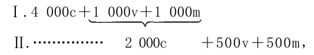
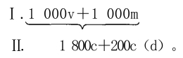
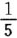

1.损耗的价值部分在货币形式上的补偿

如果我们现在从下列公式开始：那么，商品2000Ⅱc和同等价值的商品Ⅰ（1000v＋1000m）交换的前提是：2000Ⅱc全部以实物形式再转化为第Ⅰ部类所生产的第Ⅱ部类的不变资本的实物组成部分；但是，后者借以存在的商品价值2000包含着补偿固定资本的价值损失的要素，这个要素不需要立即用实物来补偿，而要转化为货币，这个货币逐渐积累成一个总额，直到固定资本需要以实物形式更新的时候为止。每一年都是固定资本的终年，固定资本时而需要在这个或那个单个企业，时而需要在这个或那个产业部门进行补偿；对同一个单个资本来说，总会有这一部分或那一部分固定资本需要补偿（因为固定资本各部分的寿命不同）。如果我们考察年再生产，——即使是原有规模的年再生产，也就是说，把一切积累撇开不说，——我们也不是从头开始。我们考察的是许多年中的一年，而不是资本主义生产刚诞生的一年。因此，投入第Ⅱ部类的各种各样的生产部门的不同资本也会有不同的年龄。就像在这些生产部门从事生产的人每年都有死亡一样，每年也有许多固定资本在当年到达寿命的终点，必须用积累的货币基金实行实物更新。所以，在2000Ⅱc和2000Ⅰ（v＋m）的交换中就包含着2000Ⅱc由它的商品形式（消费资料）到它的实物要素的转化，这些实物要素不仅由原料和辅助材料构成，而且也由固定资本的实物要素，如机器、工具、建筑物等等构成。因此，2000Ⅱc的价值中要用货币来补偿的损耗和正在执行职能的固定资本的数量，是完全不一致的，因为固定资本每年都有一部分必须用实物来补偿，但这要有一个前提，即第Ⅱ部类资本家在前几年内已经积累了这种转化所必需的货币。不过，这一个前提既适用于前几年，同样也适用于当年。
在Ⅰ（1000v＋1000m）和2000Ⅱc的交换中，首先要指出，价值额Ⅰ（v＋m）不包含任何不变的价值要素，因而也不包含任何用以补偿损耗的价值要素，即不包含由不变资本的固定组成部分转移到v＋m借以存在的实物形式的商品中去的价值的要素。相反地，这种要素却存在于Ⅱc中，并且正是这种因固定资本而存在的价值要素的一部分，不需要立即由货币形式转化为实物形式，而是首先要保留在货币形式上。因此，当Ⅰ（1000v＋1000m）和2000Ⅱc交换时，立即遇到了困难：第Ⅰ部类的2000（v＋m）借以存在的实物形式的生产资料，要用它的全部价值额2000和以第Ⅱ部类的消费资料存在的等价物进行交换，而另一方面，消费资料2000Ⅱc却不能以它的全部价值额来和生产资料Ⅰ（1000v＋1000m）交换，因为它的价值的一部分——等于固定资本中有待补偿的损耗或价值损失——必须首先以货币形式沉淀下来，而在我们仅仅考察的当年再生产期间，不再作为流通手段执行职能。但是，使商品价值2000Ⅱc所包含的损耗要素借以货币化的货币，只能从第Ⅰ部类取得，因为第Ⅱ部类不可能自己给自己支付报酬，而是要通过出售自己的商品才能得到报酬；因为按照前提，Ⅰ（v＋m）要购买2000Ⅱc的全部商品额；所以第Ⅰ部类必须通过这种购买，使第Ⅱ部类的那个损耗部分转化为货币。但是，按照以前阐明的规律，预付到流通中去的货币，将回到后来把等量商品投入流通的资本主义生产者手中。第Ⅰ部类在购买Ⅱc时，显然不会既把商品2000付给第Ⅱ部类，此外又把一个额外的货币额一次永久地（不再通过交换的行为回到自己手中）付给第Ⅱ部类。否则，对商品量Ⅱc的购买就会高于它的价值。如果第Ⅱ部类用它的2000c实际上交换到了Ⅰ（1000v＋1000m），那么，它对第Ⅰ部类也就不再有所要求，而在这个交换中流通的货币将回到第Ⅰ部类那里还是第Ⅱ部类那里，要看二者当中是谁把货币投入流通的，也就是说，是谁首先作为买者出现的。在这个场合，第Ⅱ部类应该同时把它的商品资本按其全部价值额再转化为生产资料的实物形式，而我们的前提却是，商品出售以后，这个商品资本的一部分不会在当年的再生产期间由货币再转化为第Ⅱ部类的不变资本的固定组成部分的实物形式。因此，只要第Ⅱ部类把价值2000的商品卖给第Ⅰ部类，而向第Ⅰ部类购买的商品却不到2000，比如说，只有1800，第Ⅱ部类就会得到一个货币差额。这样，第Ⅰ部类就只好用货币200来补足这个差额，这些货币不会再流回到它那里，因为它已经不能用那种把商品＝200投入流通的办法，再取出它预付到流通中去的货币。在这种情况下，在第Ⅱ部类方面有一个用来补偿它的固定资本损耗的货币基金；在另一方面，即在第Ⅰ部类方面，却有价值200的生产资料的生产过剩。这样，公式的全部基础，即以不同生产体系之间保持完全的比例性为前提的规模不变的再生产，也就遭到彻底破坏。这样，我们克服一个困难就只是创造出另一个更麻烦得多的困难。
因为这个问题提出了特殊困难，而且直到现在还没有为政治经济学家研究过，所以我们要逐个考察一切可能的（至少看起来是可能的）解决问题的办法，更确切地说，一切可能的提出问题的办法。
我们首先像前面一样，假定Ⅱ把2000卖给第Ⅰ部类，但是，只向第Ⅰ部类购买商品1800。在商品价值2000Ⅱc中，包含着为补偿损耗而以货币形式贮藏的200。所以，2000Ⅱc的价值分成两部分：1800要和第Ⅰ部类的生产资料相交换，200为了补偿损耗而要（在2000c卖给第Ⅰ部类之后）保持货币形式。或者，按其价值来说，2000Ⅱc＝1800c＋200c（d）。在这里，d＝déchet〔损耗〕。
在这种情况下，我们要考察下列的交换：

第Ⅰ部类用为支付工人劳动力报酬而以工资形式付给工人的1000镑购买消费资料1000Ⅱc；第Ⅱ部类用同一个1000镑购买生产资料1000Ⅰv。因此，第Ⅰ部类的资本家的可变资本以货币形式流回到他们手中；他们可以用这个货币在下一年购买同等价值额的劳动力，即用实物补偿他们的生产资本的可变部分。——其次，第Ⅱ部类用预付的400镑购买生产资料Ⅰm；Ⅰm用同一个400镑购买消费资料Ⅱc。这样，第Ⅱ部类预付在流通中的400镑回到了第Ⅱ部类的资本家手中，但只是作为已售商品的等价物回到他们手中。第Ⅰ部类预付400镑来购买消费资料；第Ⅱ部类再向第Ⅰ部类购买400镑的生产资料，从而这400镑流回第Ⅰ部类那里。到此为止，计算如下：
第Ⅰ部类把1000v＋800m以商品形式投入流通；此外，它以货币形式投入流通的是：作为工资的1000镑以及用来和Ⅱ交换的400镑。交换完成以后，第Ⅰ部类有：货币形式的1000v，800m转化为800Ⅱc（消费资料），还有400镑货币。
第Ⅱ部类把商品（消费资料）1800c和货币400镑投入流通；交换完成以后，它有：第Ⅰ部类的商品（生产资料）1800和货币400镑。
现在，我们在第Ⅰ部类方面还有200m（以生产资料形式存在），在第Ⅱ部类方面有200c（d）（以消费资料形式存在）。
按照假定，第Ⅰ部类用200镑购买价值200的消费资料c（d）；但是第Ⅱ部类把这200镑抓住不放，因为200c（d）代表损耗，所以不必立即再转化为生产资料。因此，就有200Ⅰm不能出售；第Ⅰ部类的有待补偿的剩余价值，就有不能实现，不能由它的生产资料的实物形式转化为消费资料的实物形式。
这不仅和原有规模的再生产的前提相矛盾；这本身就不是一种可以说明200c（d）怎样转化为货币的假设；相反地，这表示这种转化是无法说明的。由于无法论证200c（d）怎样转化为货币，所以假定，正是因为第Ⅰ部类不能把自己剩下的200m转化为货币，第Ⅰ部类才切望把它转化为货币。如果把这一点理解为交换机制的正常活动，那就等于假定，为了使200c（d）按时转化为货币，每年都要有200镑从天上掉下来。
如果Ⅰm不像在这里那样，以它原来的存在方式出现，即不是作为生产资料的价值组成部分出现，从而不是作为它的资本主义生产者必须通过出售才能在货币上实现的商品价值的组成部分出现，而是在同资本家一起分享剩余价值的人手中，例如，在土地所有者手中作为地租或在货币贷放者手中作为利息出现，这种假设的荒谬性就不那么明显了。但是，如果产业资本家不得不作为地租或利息转让给剩余价值的其他共有者的那部分商品剩余价值，长期不能通过商品本身的出售而实现，那么，地租或利息的支付也就终止，因而土地所有者或食利者也就不能作为机器神，通过花费地租或利息来使年再生产的一定部分任意转化为货币了。全体所谓非生产劳动者，如官吏、医生、律师等等的支出，以及其他以“公众”的身份“帮助”政治经济学家说明这些政治经济学家所不能说明的问题的那些人的支出，也具有同样的情况。
如果在第Ⅰ部类和第Ⅱ部类之间，在资本主义生产者本身的两大部类之间，不是直接进行交换，而是有商人做中间人，靠商人的“货币”去克服一切困难，那也是无济于事的。例如，在当前的场合，200Ⅰm归根结底要卖给第Ⅱ部类的产业资本家。它可以通过一系列商人之手，但是最后一个商人，就其和第Ⅱ部类的关系来说，他的处境——按照假设——是和第Ⅰ部类的资本主义生产者最初的处境相同的，也就是说，商人同样不能把200Ⅰm卖给第Ⅱ部类；而这个购买额的停滞，使第Ⅰ部类不能更新同样的过程。
由此可见，即使撇开我们真正的目的不说，也完全有必要考察再生产过程的基本形式（排除一切插在中间使事情模糊不清的障碍），以便摆脱各种虚伪的遁辞，因为当我们直接把社会再生产过程的复杂具体的形式作为分析对象时，这些虚伪的遁辞就会造成一种似乎它们是“科学的”说明的假象。
当再生产（无论是简单的，还是规模扩大的）正常进行时，由资本主义生产者预付到流通中去的货币，必须流回到它的起点（无论这些货币是他们自己的，还是借来的）。这是一个规律，它永远排除了关于200Ⅱc（d）是靠第Ⅰ部类预付的货币来实现货币化的这一假设。